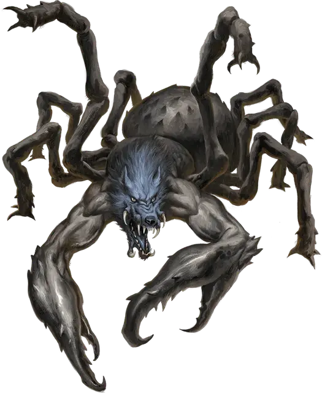

Паукодемон фисаразу
Phisarazu Spyder-Fiend
Большое Исчадие (Демон), обычно хаотично-злое

Класс Доспеха 17 (природный доспех)
Хиты 170 (20к10 + 60)
Скорость 40 футов, лазая 40 футов
| мод | спас | ||
|---|---|---|---|
| СИЛ | 19 | +4 | +4 |
| ЛОВ | 14 | +2 | +7 |
| ТЕЛ | 17 | +3 | +8 |
| мод | спас | ||
|---|---|---|---|
| ИНТ | 11 | +0 | +0 |
| МДР | 14 | +2 | +7 |
| ХАР | 13 | +1 | +1 |
Навыки Восприятие +7, Скрытность +7
Сопротивление урону огонь, холод, электричество; дробящий, колющий, рубящий от немагических атак
Иммунитет к урону яд
Иммунитет к состояниям отравление
Чувства истинное зрение 120 футов, пассивное Восприятие 17
Языки Общий, Бездны, Телепатия 120 фт.
Опасность 13 (10000 опыта)
Бонус мастерства +5
Особенности
Сопротивление магии. Фисаразу совершает с преимуществом спасброски от заклинаний и прочих магических эффектов.
Паучье лазание. Фисаразу может лазать по сложным поверхностям, включая потолки, без совершения проверок характеристик.
Чувство паутины. Находясь в контакте с паутиной, фисаразу знает точное местоположение всех других существ, находящихся в контакте с той же паутиной.
Хождение по паутине. Фисаразу игнорирует ограничения перемещения, вызванные паутиной.
Действия
Мультиатака. Фисаразу совершает атаку Укусом и две атаки Когтём. Он может заменить одну из этих атак Сверкающей струей, если возможно.
Укус. Рукопашная атака оружием: +9 к попаданию, досягаемость 5 футов, одна цель. Попадание: 15 (2к10 + 4) колющего урона плюс 9 (2к8) урона ядом, также цель будет отравлена до начала следующего хода фисаразу.
Коготь. Рукопашная атака оружием: +9 к попаданию, досягаемость 5 футов, одна цель. Попадание: 22 (4к8 + 4) рубящего урона.
Сверкающая струя (перезарядка 5-6). Фисаразу выпускает сверкающую паутину в 60-футовом конусе. Все существа и объекты в этой области окутываются мерцающей паутиной на 1 минуту, в течение которой они испускают тусклый свет в радиусе 10 футов и не получают преимуществ от невидимости. Также все существа в этой области должны преуспеть в спасброске Мудрости Сл 16, иначе становятся ошеломлёнными на 1 минуту. Ошеломлённое существо может повторять спасбросок в конце каждого своего хода, при успехе оканчивая на себе состояние.
Бонусные действия
Изменение формы. Фисаразу превращается в краба [crab], драука [drider] или гигантского краба [giant crab], или же возвращается в свой истинный облик. Во всех обликах его характеристики не меняются. Всё несомое и носимое им снаряжение не превращается.
Описание
Демонические чудовища, сочетающие в себе худшие черты волков и пауков, передвигаются на раздутых паучьих телах и скрежещут волчьими головами. Паукодемоны обычно покрыты чужими внутренностями, поскольку жестокие убийства являются их любимым времяпровождением. Они сплетают прочную паутину и изобретательны в том, как использовать ее против добычи.
Они объединены в иерархию, основанную на силе и хитрости, где паукодемоны более высокого ранга доминируют над более низкими. Паукодемоны одинакового ранга борются друг с другом за продвижение по службе и охотно обращаются друг против друга, если предательство может улучшить их положение.
Паукодемоны преданно служат своему генералу, Пауку-Волку Миске [Miska the Wolf-Spider]. Хотя во время заточения Миски в Пандемониуме их редко можно было увидеть, они стали все чаще проявлять себя, когда Миска начал бороться за свое освобождение.
Паукодемон фисаразу
Под волчьими головами у паукодемонов фисаразу торчит пара мускулистых рук. Они недоверчивы и злобно настроены по отношению ко всем остальным существам, что делает их полезными для поимки каккуу или для патрулирования.
Фисаразус может магически изменять свой облик, но только на те, которые имеют десять конечностей, навроде драуков [drider] и крабов [crab]. Они используют эту способность, чтобы устраивать засады, проникать во вражеские лагеря или казаться безобидными во время несения караула.